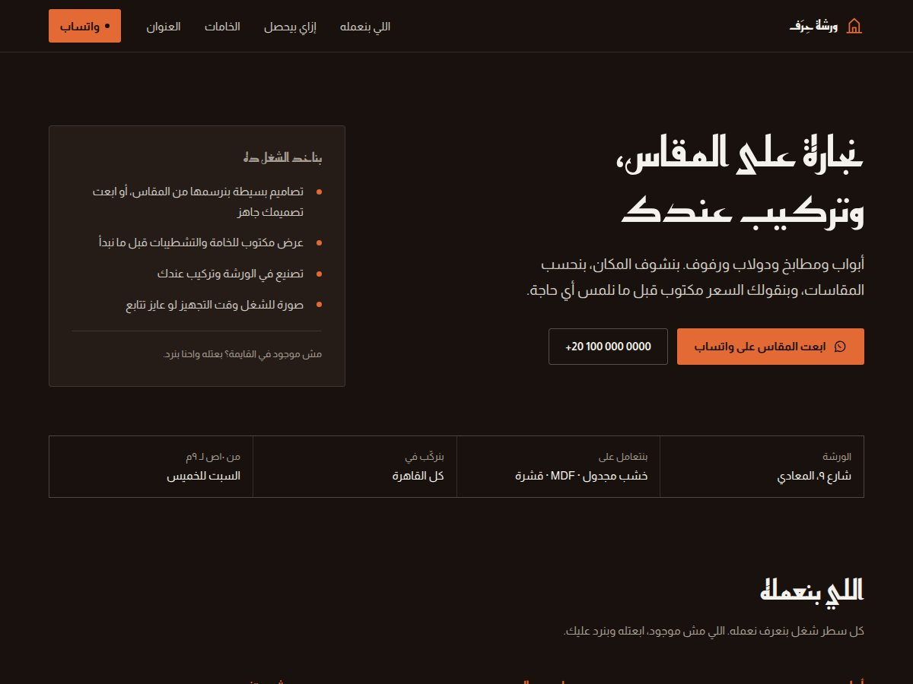
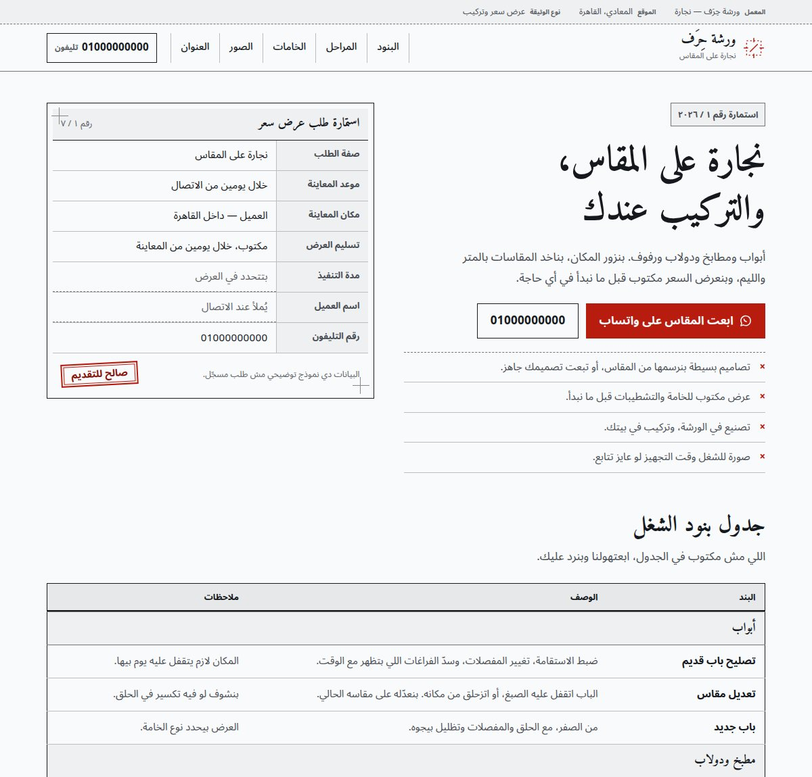
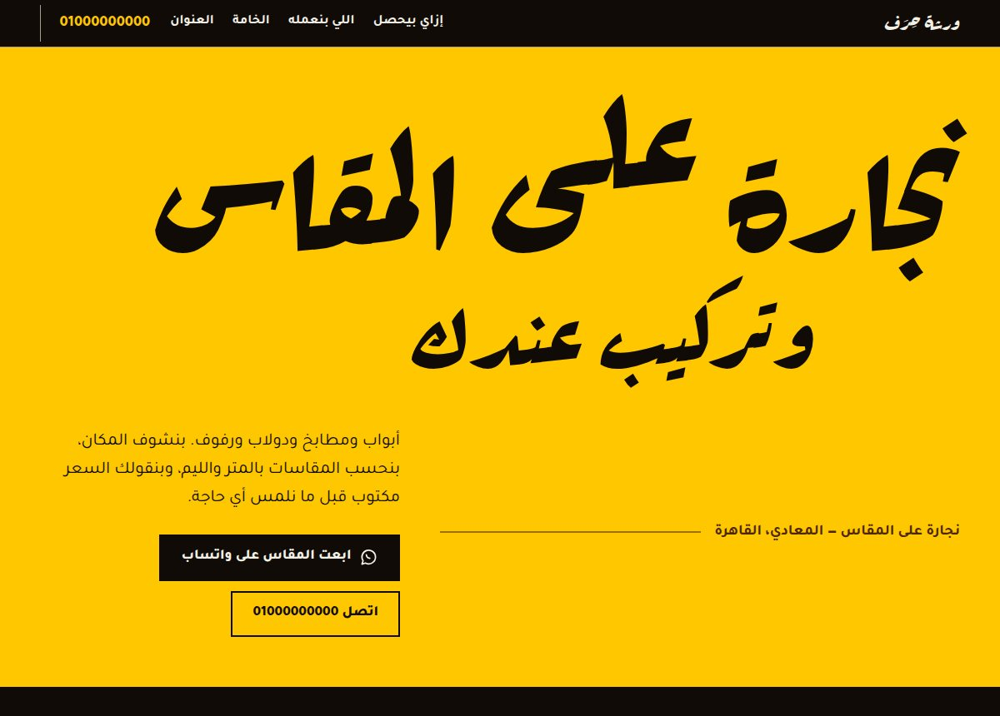
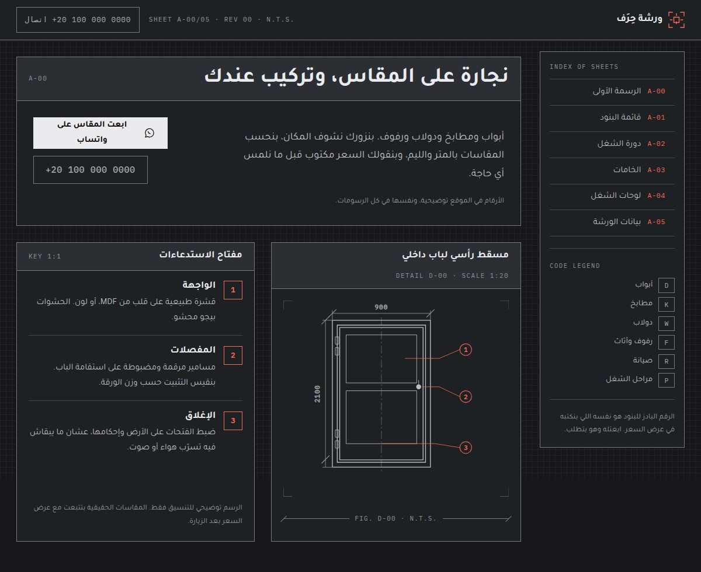

أربع واجهات لنجارة واحدة
نفس الورشة التخيلية، نفس المحتوى، أربع اتجاهات تصميم مختلفة. اتنين فاتحين فاتحين على بعض عشان تقارن، وواحد بيفصل ويقول ليه اشتغل كده.
One fictional Cairo carpentry workshop, four independent design directions — built to compare rather than to ship together.
النماذج
افتح أي واحدة في تاب جديد.
-

A الطاولة والسطر The Bench and the Line خلفية داكنة، لون واحد بس، ومسطح بالكامل من غير أي ظل. الخدمات معروضة كقائمة أوامر مش كورتات. افتح /proto-harf/ -

B الأختام والأوراق Stamps and Forms فاتح بارد مش بيج، خط أميري نسخي، ولون أحمر أختام واحد. حس文集بي ومستند رسمي. افتح /proto-harf-stamp/ -

C الملصق The Poster أصفر مشبع بياخد ٤٤٪ من الصفحة، وعنوان راكاس ضخم. أبعد عن طلب هادي في الساعة عشرة بالليل. افتح /proto-harf-poster/ -

D لوح الرسم The Spec Sheet شبه أحادي اللون، شبكة رسم هندسي، ورسم باب بأبعاد حقيقية وأرقام استدلال بترمي على الخدمات. افتح /proto-harf-spec/
اللي اتأكدت منه
- تباين الألوان
- كل زوج نص متقاس رقمياً. أسوأ حالة ٤.٥٧:١، والمطلوب ٤.٥:١.
- العرض الأفقي
- صفر تجاوز على ٤ واجهات × ٩ عروض (٣٦٠ لـ ١٩٢٠ بكسل).
- أهداف اللمس
- ٤٤ بكسل على الأقل في كل الواجهات، مفيش استثناء.
- الاتجاه
- خصائص CSS منطقية في كل الواجهات، والصفحات كلها RTL.
- الوزن
- HTML و CSS فقط. من غير إطار عمل، من غير خطوة بناء، من غير حزم.
- الحركة
- كل الأنيميشن بيتشال بالكامل مع prefers-reduced-motion.